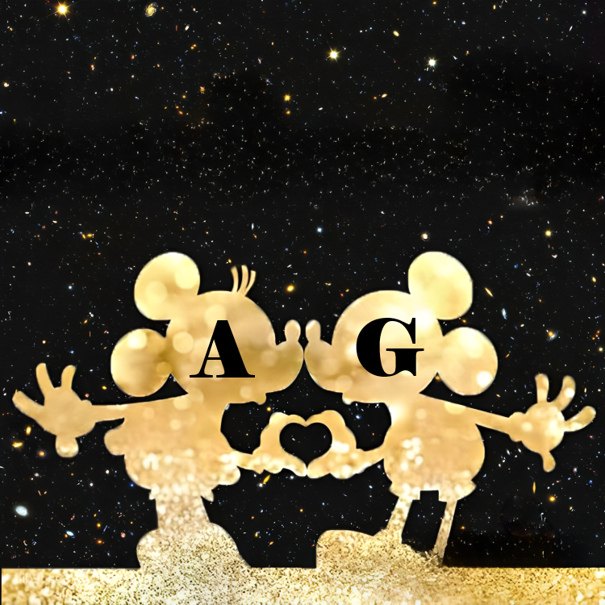

Cada ano que pasa el nuestro amor se fortalece cada dia, haciendo que nuestro corazones latan mas rapido y mas fuerte, abriendo el camino hacia nuevas aventuras que enfrentamos juntos, uniendo nuestras almas para saborear cada momento extraordinario que encontramos en el viaje de nuestra vida juntos!!

Querida mi compañera de vida,
Feliz año nuevo a ti que eres cada día la persona más extraordinaria y única del universo entero a quien quiero amar hoy para siempre y más allá y juntos hoy despedimos otro año increíble, el 2024 que ha pasado lleno de recuerdos extraordinarios y únicos que juntos vivimos y conservamos en la caja de nuestros recuerdos que nos acompañaron aquí juntos el último día del año para celebrar juntos el nuevo año de hoy, 2025, que estoy seguro nos traerá nuevas sorpresas y nuevos momentos para vivir y pasar juntos. con todo nuestro amor que cada momento crece y se fortalece, haciéndonos más unidos que nunca. Quiero decirte gracias por existir aquí en mi vida y por hacer que cada momento sea único con cada gesto especial tuyo. Gracias por estar aquí y darme tus increíbles abrazos donde quiero quedarme para siempre y más allá y donde me siento seguro como un niño y me encanta cerrar mis ojos en tu pecho mientras me das oxígeno con tus besos y me encanta estar aquí cada momento junto con mi pequeño y precioso dinero en efectivo. Quiero abrazarte fuerte contra mí para protegerte lejos de todo daño y quiero estar aquí en cada momento de mi vida para siempre y más allá y quiero ser el lugar donde siempre estarás a salvo, mientras nuestras almas se unen cada día en una sola persona y juntos somos capaces de afrontar y ganar cada reto. Todos los días quiero verte sentir bien y admirar tu dulce sonrisa que, como el sol, ilumina mis días y me hace sentir bien, dándome felicidad y una fuerza infinita en mi corazón capaz de hacerme tocar el cielo. Que este próximo año sea un año lleno de paz y tranquilidad y que Dios lo bendiga para nosotros y nuestra preciosa familia junto con nuestra preciosa relación y que nos acompañe al inicio de este nuevo año de infinito amor generado por nuestros corazones que juntos formar un solo corazón. Vamos a despedirnos juntos de este 2024 que nos ha traído momentos hermosos e inolvidables y que guardaremos juntos en el fondo de nuestro corazón amor de mi vida y estoy orgulloso de ti y de cómo con tu fuerza que admiro cada día que tienes. No he podido parar nunca y cada desafío que has tenido es capaz de llevarlo a su fin sin detenerte nunca y recuerda que en cada momento, incluso de dificultad que parece imposible de afrontar, estaré aquí a tu lado apoyándote y animándote porque cada momento eres el numero uno en todo el universo y tomo ejemplo de ti cada día amor de mi vida y en mi pequeño camino trato de dar lo mejor de mí y juntos seamos capaces de afrontar y ganar todo. Te deseo amor de mi vida un 2025 increíble y que este nos junte cosas inolvidables e increíbles y siento que al igual que el 2024 será un año extraordinario que nos regalará emociones inolvidables y nos traerá nuevas aventuras que de la mano mano nos abriremos como regalos que la vida nos da a cada momento y lo que será más especial es que enfrentaremos cada cosa juntos con la plenitud de nuestro amor con nuestros corazones latiendo sincronizados como una melodía que quiero tocar juntos para siempre y alguna vez. ¡más allá de! Te amo inmensamente desde el fondo de mi corazón que late sólo y sólo por ti y que acoge tu preciosa alma en la infinidad de nuestros abrazos y que existe para protegerla de todo mal porque cada día mereces sólo y sólo lo bello y Cosas extraordinarias que nos ofrece la vida para la persona especial que eres cada día! Te amo infinitamente desde lo más profundo de mi mente donde eres en cada momento el sueño más hermoso, único y extraordinario que quiero tener para toda mi vida y más allá y vivirlo intensamente cada momento de mi vida! Te amo ilimitadamente desde el fondo de mi alma, tú que eres el motor que alimenta mi corazón y me mantiene vivo, tú que eres el oxígeno que me mantiene vivo y que me levanta cada día de la cama y me da fuerzas infinitas para afrontar. vivir juntos como una sola persona y lograr juntos superar cada desafío que la vida nos pone por delante, tú que eres cada parte que compone mi cuerpo y mi alma, tú que eres la estrella que guía mi camino y me lleva. en el fondo de tu corazón donde cada día me siento a salvo lejos de todo mal, tú que eres mi compañera de vida que me acompaña cada día en cada aventura, tú que eres mi dulce y única mogliettina número uno en todo el universo, tú que eres y por siempre será mi dulce pingüino que amo y quiero amar por toda mi vida y más allá, ¡tú que eres mi todo! ¡Feliz año nuevo y un abrazo intenso y besos interminables de tu topolino viziato! A+G+GIOAN = ¡hoy, por siempre y más allá!